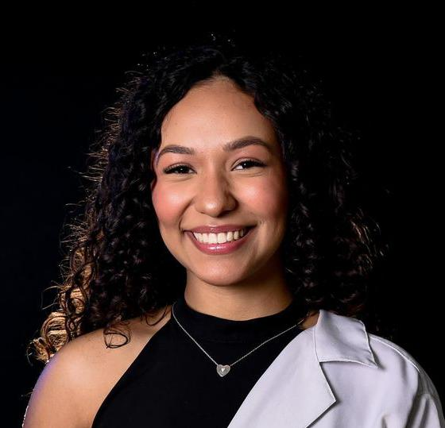

Repórter entrevista Especialista e moradora local
A seguir veja os relatos coletados na reportagem.
A Repórter Raquel Nascimento entrevistou uma especialista sobre os impactos do desequilíbrio ambiental, a especialista explicou que o desmatamento, a poluição e as mudanças climáticas estão alterando profundamente os ecossistemas e aumentando a ocorrência de fenômenos extremos, como secas e enchentes. Segundo ela, se não houver ações efetivas de preservação, os danos poderão se intensificar nos próximos anos, afetando diretamente a biodiversidade e a vida das pessoas.

"O desequilíbrio ambiental está afetando cada vez mais os ecossistemas. O desmatamento, a poluição e as mudanças climáticas contribuem para a perda da biodiversidade e para o aumento de eventos extremos, como secas e enchentes. Se não houver ações de preservação, os impactos serão ainda maiores no futuro.".
Em meio a esses alertas, a equipe conversou com uma moradora que viveu de perto as consequências desses problemas. Ela contou que, no ano passado, sua rua ficou completamente alagada após uma chuva muito forte, e muitas famílias perderam móveis e precisaram deixar suas casas. O relato mostra como as questões ambientais ultrapassam os debates científicos e atingem o cotidiano das comunidades. A reportagem reforça que tanto especialistas quanto cidadãos reconhecem a urgência de cuidar melhor do meio ambiente. As ações de conscientização e prevenção são essenciais para evitar tragédias e garantir um futuro mais equilibrado para todos.
"No ano passado, minha rua ficou completamente alagada após uma chuva muito forte. Muitas famílias perderam móveis e tiveram que sair de casa. Percebi como os problemas ambientais podem afetar diretamente a vida das pessoas e a importância de cuidar melhor do meio ambiente", disse.